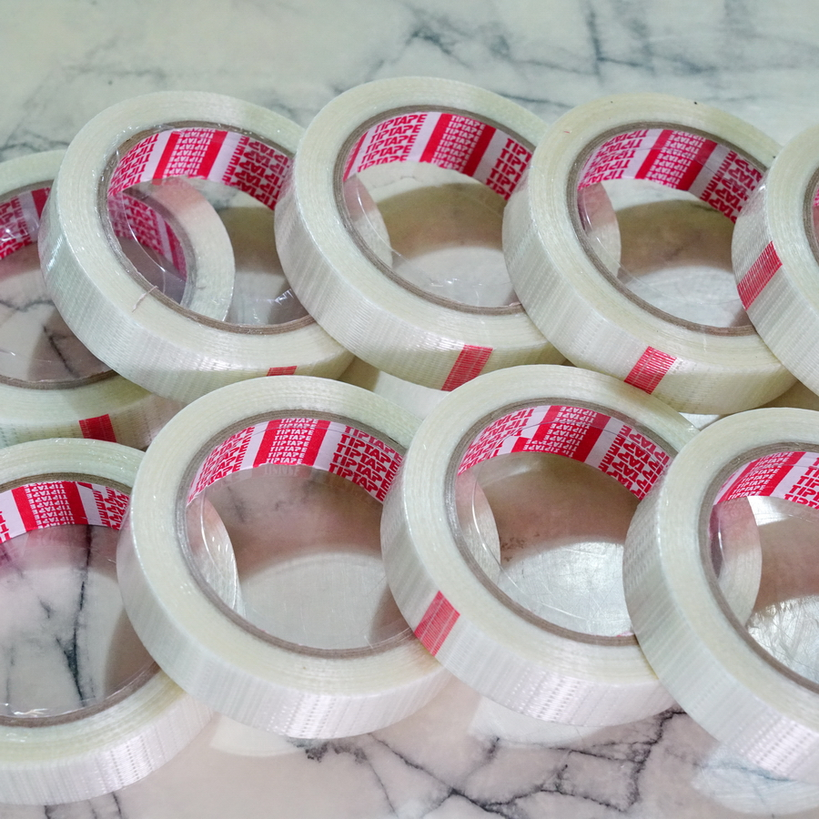

Cheap, easy to build and repair, beginner friendly!
The Cheese Stick at the airfield. The kids love it!
I scrolling through my discord and came across a picture of a funny-looking plane. "Slow Stick", it said on the box. And the artwork on the box itself was literally just a stick with wings attached. I thought it was a joke, but no, it was real!
So I started to do some digging and heard about how easy it was to fly. I've never flown much RC and it seemed just like the perfect plane for me. Only problem is that the shipping costed more than the plane itself... which means if I want one, I'll have to make my own ¯\_(ツ)_/¯
Since this is my first scratch build, I think it'll be very easy to follow along. I'll leave all the things I learned here, even if it seems like common sense. This article is aimed towards noobs like myself after all!
Get da files
I've posted the files on GrabCad. You'll need to make an account to download them but trust me, if you're going take on similar projects like this in the future, it's worth it (and it's free!)
Tools Needed
- Normal printer
- 3d printer
- Sharp box cutter/hobby knife
- Cutting mat
- Glue gun
- Screwdriver
- Pliers
- Drill
- ~1.25mm (or larger) drill bit
- ~2mm drill bit
- Vice
- Thumb Tacks
Materials for the airframe
- Foam board (depron). The one used in mine was 5mm thick
- 10x10mm square carbon tube. At least 700cm long
- 2 8x8mm square carbon tube. At least 500cm long (you can get a longer one and cut it in two)
- Carbon spars. Any size will do
- 2.5mm steel rod
- 2mm steel rod
- 1.25mm (or close) steel rod/music wire
- 2x front wheels of your choosing
- 1x tail wheel of your choosing
- Screw collars, to be put onto the steel rods
- POR glue
- Zip ties
- Rubber bands
- Filament tape, aka Strapping/packing tape
 - M3 Screws, 15mm (doesn't have to be exact) + nuts
- Velcro (hook and loop fastener)
Power
You can choose your own or use what you want. I'm not too experienced with these
- Slow prop. I used 8 degrees pitch, 3.8" radius
- 2212 1200KV BLDC Outrunner motor
- 20A BLDC ESC
- Propeller spinner adaptor
- 4 9g Micro Servo
- 4ch or more RC receiver (if you want to save money, get FlySky)
- Lost plane alarm (optional, highly recommended)
- 11.1V 3s 1100mAh Lipo battery
All this should be avaiable at your local hobby store, tho you can get it at a better price if you order online. I did a mix of both and ended up spending somewhere between 60-70$